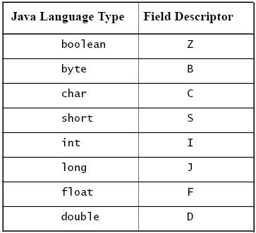

JNI头文件分析
为了分析JNI头文件，特意写了HeaderTest这个包含多个不同的native方法的测试类。
这是一个相当简单的文件。前两个为成员变量、第三个为非本地方法，主要考察成员变量和非本地方法，是否在头文件中出现。后面一段是几种类型的本地方法，例如无输入无输出的本地方法、输入输出基本数据类型的本地方法、输入输出String类型的本地方法、输入输出java自定义的对象的本地方法、输出java自定义的接口的本地方法、输出自定义的对象的本地方法。后面的就是这几种类型对应的输入输出为数组的方法。最后总和的方法。在此类的外部有一个自定义的辅助类Student。本例中还考察private、friendly、public等访问权限对本地方法产生头文件的影响。以及方法重载对头文件中相应方法的影响……太罗嗦了！大家就看看下面的java文件吧！！！
import java.util.*;
public class HeaderTest{
private int i = 0 ;
float f = 0f;
public void XXX(String s){
;
}
private native void doVoid();
native int doShort();
native void doArray(Object[] o );
native int doInt(int i); //byte ,short ,int,long,float,double ,boolean,char
native int doInt(double d); //byte ,short ,int,long,float,double ,boolean,char
native int doInt(Object o);
native int doInt(double d1,double d2);
static native int doInt(double d1 ,double d2,double d3);
static native int doInt(double d1 ,float f,boolean b ,char[] c );
native int doInt(int[] i);
native int doInt(int[] i1,double[] i2 );
static native int doInt(int[] i1,double[] i2 ,Object[] o );
public native String doString(String s);
public native Object doObject(Object o );
public native Enumeration doInterface(Iterator it);
public native Student doStudent(Student s);
// native int[] doInt(int[] i); //byte ,short ,int,long,float,double ,boolean,char
public native String[] doString(String[] s);
public native Object[] doObjects(Object[] o );
public native Enumeration[] doInterface(Iterator[] it);
public native Student[] doStudent(Student[] s);
public native static Object doAll(int[] i , String[] s , Student[] student );
}
class Student{}
编译上面的文件，然后对编译后的类文件，使用javah命令，产生HeaderTest.h头文件。下面就是该头文件的一部分。
1.
2. #include <jni.h>
3.
4. #ifndef _Included_HeaderTest
5. #define _Included_HeaderTest
6. #ifdef __cplusplus
7. extern "C" {
8. #endif
9.
14. JNIEXPORT void JNICALL Java_HeaderTest_doVoid (JNIEnv *, jobject);
……
1. #ifdef __cplusplus
2. }
3. #endif
4. #endif
为了阅读的方便，给此头文件加了行号！
JNI头文件一般由三部分组成：1.头文件；2.本地方法的注册；3.本地方法在头文件中的表示。
1. 1-8 是C、C++的头，它包含了我们在VC工具中要使用的jni.h的头文件，以及其它的一些指令。（相信你对C、C++比较了解吧！不了解可以阅读相关书籍！我这里就不讲解了）
2. 以后的每隔6行就是一个本地方法对应的头文件中的方法。这些方法的注释部分包含Class、Method、和Signature三部分。Class当然就是具有此本地方法的类的名称了，在我们的例子中为HeaderTest；Method就是本地方法的名称了，我们例子中有如doStudent的方法；Signature是方法的标识，它是一个标识符，主要供我们在JNI操作java对象的方法使用的。本节只简单讲述其特征，具体使用见本博客的后续文章。
3. 接着就是一个本地方法在头文件中的表示了！例如：
JNIEXPORT jobject JNICALL Java_HeaderTest_doObject (JNIEnv *, jobject, jobject);
从上面的头文件可以看出：头文件包含以下7个部分：
JNIEXPORT <JNIType> JNICALL Java_HeaderTest_doVoid (JNIEnv *, jobject);
1 2 3 4 5 6 7
我就简单地介绍这7个部分吧！
1) JNIEXPORT（1）和JNICALL（3）都是JNI的关键字，表示此函数是要被JNI调用的。
2) <JNIType>（2）为本地方法返回的数据类型，对应与java源文件中的该方法返回的数据类型
3) Java（4）为JNI中标识此方法来源于java的标识头
4) _HeaderTest（5）表示该方法所在的类。当该类在包中时前面会按次序加上包名。我将上面的类文件放入名为mxd的包中，相应的5部分就为mxd_HeaderTest了，其它类推吧！
5) _doVoid（6）为JNI中对应与java文件中本地方法的方法名。这不是完全对应的哦！重载方法是一个例外！
6) (JNIEnv *, jobject)（7）方法的最后一部分哦！比较复杂，它们有一个共同的特点，包含JNIEnv *――它是一个接口指针，用于定位函数表中的函数！在JNI规范中一般称为“Interface Pointer”。看到这儿好像和过程调用很类似了！是的，JNI中的操作过程，就是面向过程的！后面的jobject是一个指向该类的指针，类似与C语言中的this。这个第二个参数是变化的，当该方法为类的实例方法时该参数为jobject；当该方法为类方法（即静态方法）时该参数为jclass，指向该类的class。详细见下面。
以下是HeaderTest.java的源文件中的本地方法和HeaderTest.h头文件中的方法对照！
private native void doVoid();
native int doInt(int i); //byte ,short ,int,long,float,double ,boolean,char
public native String doString(String s);
public native Object doObject(Object o );
public native Enumeration doInterface(Iterator it);
public native Student doStudent(Student s);
native int[] doInt(int[] i); //byte ,short ,int,long,float,double ,boolean,char
public native String[] doString(String[] s);
public native Object[] doObjects(Object[] o );
public native Enumeration[] doInterface(Iterator[] it);
public native Student[] doStudent(Student[] s);
JNIEXPORT void JNICALL Java_HeaderTest_doVoid (JNIEnv *, jobject);
JNIEXPORT jint JNICALL Java_HeaderTest_doInt__I (JNIEnv *, jobject, jint);
JNIEXPORT jstring JNICALL Java_HeaderTest_doString__Ljava_lang_String_2 (JNIEnv *, jobject, jstring);
JNIEXPORT jobject JNICALL Java_HeaderTest_doObject (JNIEnv *, jobject, jobject);
JNIEXPORT jobject JNICALL Java_HeaderTest_doInterface__Ljava_util_Iterator_2 (JNIEnv *, jobject, jobject);
JNIEXPORT jobject JNICALL Java_HeaderTest_doStudent__LStudent_2 (JNIEnv *, jobject, jobject);
JNIEXPORT jintArray JNICALL Java_HeaderTest_doInt___3I (JNIEnv *, jobject, jintArray);
JNIEXPORT jobjectArray JNICALL Java_HeaderTest_doString___3Ljava_lang_String_2 (JNIEnv *, jobject, jobjectArray);
JNIEXPORT jobjectArray JNICALL Java_HeaderTest_doObjects (JNIEnv *, jobject, jobjectArray);
JNIEXPORT jobjectArray JNICALL Java_HeaderTest_doInterface___3Ljava_util_Iterator_2(JNIEnv *, jobject, jobjectArray);
JNIEXPORT jobjectArray JNICALL Java_HeaderTest_doStudent___3LStudent_2 (JNIEnv *, jobject, jobjectArray);
JNIEXPORT jobject JNICALL Java_HeaderTest_doAll (JNIEnv *, jclass, jintArray, jobjectArray, jobjectArray);
从上面的对比可以看到：
1) java中的返回值void和JNI中的void是完全对应的哦！（仅仅一个而已）。
2) java中的基本数据类型（byte ,short ,int,long,float,double ,boolean,char－8种）在JNI中对应的数据类型只要在前面加上j就对应了（jbyte ,jshort ,jint,jlong,jfloat,jdouble ,jboolean,jchar）。
3) java中的对象，包括类库中定义的类、接口以及自定义的类接口，都对应于JNI中的jobject。
4) java中基本数据类型的数组对应与JNI中的j<type>array类型。（type就是上面说的8种基本数据类型）
5) java中对象的数组对应于JNI中的jobjectArray类型。（在java中一切对象、接口以及数组都是对象）
下图是JNI规范中java数据类型和JNI数据类型的映射图。
第一幅为基本数据类型的映射图：
第二幅为引用数据类型的映射图：

以下是几个没有重载的方法及其在JNI头文件中对应的方法：
private native void doVoid();
native int doShort();
native void doArray(Object[] o );
JNIEXPORT void JNICALL Java_HeaderTest_doVoid (JNIEnv *, jobject);
JNIEXPORT jint JNICALL Java_HeaderTest_doShort (JNIEnv *, jobject);
JNIEXPORT void JNICALL Java_HeaderTest_doArray (JNIEnv *, jobject, jobjectArray);
从上面的例子可以看出：没有重载的方法在JNI的头文件中对应的方法和java中本地方法的名称是一致的。
以下是几个简单的重载方法：
native int doInt(int i); //byte ,short ,int,long,float,double ,boolean,char
native int doInt(double d); //byte ,short ,int,long,float,double ,boolean,char
native int doInt(double d1,double d2);
static native int doInt(double d1 ,double d2,double d3);
static native int doInt(double d1 ,float f,boolean b ,char[] c );
native int doInt(Object o);
JNIEXPORT jint JNICALL Java_HeaderTest_doInt__I (JNIEnv *, jobject, jint);
JNIEXPORT jint JNICALL Java_HeaderTest_doInt__D (JNIEnv *, jobject, jdouble);
JNIEXPORT jint JNICALL Java_HeaderTest_doInt__DD(JNIEnv *, jobject, jdouble, jdouble);
JNIEXPORT jint JNICALL Java_HeaderTest_doInt__DDD (JNIEnv *, jclass, jdouble, jdouble, jdouble);
JNIEXPORT jint JNICALL Java_HeaderTest_doInt__DFZ_3C (JNIEnv *, jclass, jdouble, jfloat, jboolean, jcharArray);
JNIEXPORT jint JNICALL Java_HeaderTest_doInt__Ljava_lang_Object_2 (JNIEnv *, jobject, jobject);
从上面的对比可以看出：重载方法时，方法的后面还有一个表示方法参数的“后缀”。例如上面操作的变量为Int时加一个表示此类型的标识“I”；多个类型当然依次加多个了；当某个变量为数组时在其类型前面会加一个“3”；当其为对象时后面会加一个“L”表示这是一个对象，以及一个该对象的路径，不过路径之间用“_”代替包路径的“.”或者文件路径的“/”哦！这对应于Signature。见后面！
下面是复杂的例子：
public native Student[] doStudent(Student[] s1);
public native Student[] doStudent(Student[] s1,Student[] s2);
JNIEXPORT jobjectArray JNICALL Java_HeaderTest_doStudent___3LStudent_2 (JNIEnv *, jobject, jobjectArray);
JNIEXPORT jobjectArray JNICALL Java_HeaderTest_doStudent___3LStudent_2_3LStudent_2(JNIEnv *, jobject, jobjectArray, jobjectArray);
从上面的例子可以看出，方法重载时，方法后要依次加上参数名称，前面知道了数组要在参数类型前加“3”，从上面的例子看出：参数为对象时对象名称后还要加上“2”，表示该参数为一个对象。
以下是本地实例方法和本地类方法的比较。红色的为java中的本地方法，蓝色的为JNI头文件中对应的方法。
public native Student[] doStudent(Student[] s);
public native static Object doAll(int[] i , String[] s , Student[] student );
JNIEXPORT jobjectArray JNICALL Java_HeaderTest_doStudent___3LStudent_2 (JNIEnv *, jobject, jobjectArray);
JNIEXPORT jobject JNICALL Java_HeaderTest_doAll (JNIEnv *, jclass, jintArray, jobjectArray, jobjectArray);
从上面的比较可以看出：
在本地实例方法中该参数为jobject，代表对象本身，在本地静态方法中该参数为jclass。这是它们的区别。关于如何操作代表该实例的jobject和操作该类的jclass请关注后续文章。
在JNI头文件中提到Signature，它主要用于操作Java类中的方法。Signature一般由两部分组成：1.方法参数；2.方法返回值。
1. 方法参数包含在一个括号中，返回值在括号外！
2. 方法参数个数较多时会依次以“;”隔开。
3. 当参数或者返回值是基本数据类型时，必须用其在JNI中的描述符表示。下表就是Java基本数据类型对应的JNI中的描述符。

4. 方法参数或者返回值为java中的对象时，必须以“L”加上其路径，不过此路径必须以“/”分开，自定义的对象也使用本规则，不在包中时直接“L”加上类名称。
5. 当参数或者返回值为数组时，前面必须加上“[”！
以上就是Signature表示方法的规则哦！看看下面一些Signature能一个个转换为相应的方法吗？
([LStudent;)[LStudent;
([I[Ljava/lang/String;[LStudent;)Ljava/lang/Object;
([LStudent;[LStudent;)[LStudent;
([Ljava/util/Iterator;)[Ljava/util/Enumeration;
([Ljava/lang/Object;)[Ljava/lang/Object;
([Ljava/lang/String;)[Ljava/lang/String;
(LStudent;)LStudent;
能明白就好了！后续的使用JNI操作Java对象你可以入门了哦！！
1. 类中的成员变量、非本地方法在JNI中是不会出现的。即javah产生头文件时只会关心本地方法。
2. private、friendly、protected以及public这些方法限制符不会在JNI的头文件中出现。这些访问修饰符只有在其它类使用这些方法时有效！JNI中不关心此修饰符！
3. 当我们给HeaderTest.java指定一个包时，不仅头文件中的方法的前面加了包名，并且产生的头文件也变为mxd_HeaderTest.h。